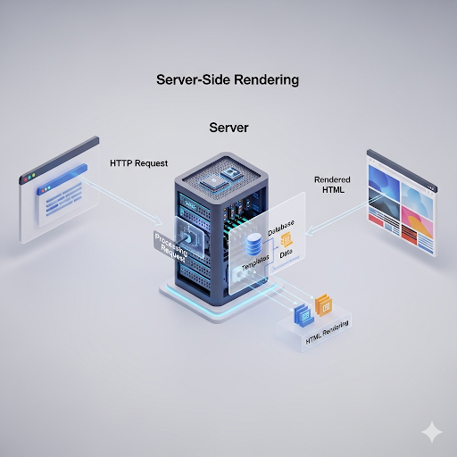
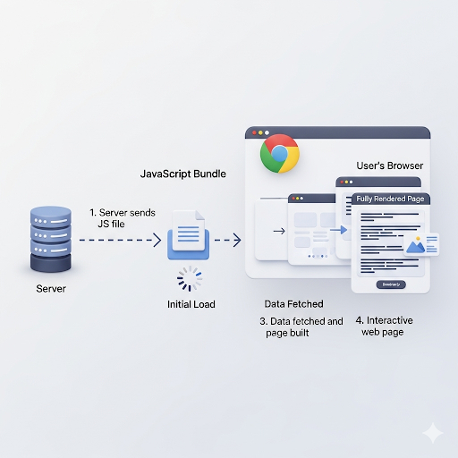

The choice between Server-Side Rendering (SSR) and Client-Side Rendering (CSR) is a fundamental decision in modern web development that impacts performance, user experience, and SEO. Here’s a comprehensive breakdown of each approach.
SSR is a method where a web page's HTML is generated on the server and then sent to the browser. The browser receives a fully formed, ready-to-display page, which is then made interactive by JavaScript.

CSR is the opposite of SSR. In this approach, the server sends a minimal HTML file (often just a "shell" or a loading spinner) along with the CSS and JavaScript files. The browser then uses the JavaScript to build the entire web page and fetch any necessary data.

| Feature | Server-Side Rendering (SSR) | Client-Side Rendering (CSR) |
|---|---|---|
| Rendering Location | Server | Browser (Client) |
| Initial Load Time | Faster (content visible immediately) | Slower (waiting for JavaScript to load and execute) |
| SEO Performance | Excellent (fully rendered HTML is easy to crawl) | Poor (crawlers may struggle with JavaScript-driven content) |
| Server Load | Higher (server renders for each request) | Lower (server serves static files) |
| Interactivity | Initial content is static until hydration is complete | Highly interactive and dynamic after initial load |
| Best for... | Content-focused sites (blogs, news, e-commerce) | Interactive applications (dashboards, social media feeds) |
In modern web development, many frameworks (like Next.js and Nuxt.js) offer a hybrid approach. This allows developers to use SSR for pages where SEO and fast initial load are critical (e.g., landing pages, product pages) and use CSR for highly interactive parts of the application (e.g., a user dashboard or a shopping cart). This gives you the benefits of both while mitigating their respective drawbacks.
When a web server has generated data (like a rendered HTML page or an API response), it sends it to the client (usually a web browser) using the Hypertext Transfer Protocol (HTTP). This process is a fundamental part of how the internet works and is a request-response cycle.
Server-Side Rendering (SSR) is faster for SEO because it provides a search engine crawler with a fully rendered HTML page from the very first request. This eliminates the need for the crawler to execute JavaScript to see the page's content, which is a significant advantage.
In a traditional Client-Side Rendering (CSR) setup, the server sends a nearly empty HTML file that is just a shell. The actual content is generated by JavaScript that runs in the user's browser after the page loads. When a search engine bot visits a CSR page, it may see a blank page or just a loading spinner, and then it has to wait for and execute the JavaScript to see the content. This process can be slow and may even cause the crawler to "give up" before it sees the full content.
With SSR, the server does the work of fetching the data and building the HTML before sending it. The bot receives a complete, content-rich HTML document on the very first request. This makes it incredibly easy for the crawler to read, understand, and index the entire page.
Search engines like Google use crawlers to discover and index web pages. While modern crawlers are much better at handling JavaScript than they used to be, they still prefer to find content in the raw HTML. SSR ensures that all links, headings, and body text are present in the initial HTML response. This means that the crawler can efficiently parse the page and follow all the links, leading to better crawlability and a more comprehensive indexing of your site.
Search engines, especially Google, use page speed as a ranking signal. Pages that load faster are given a slight advantage in search results. Because SSR delivers a fully formed page to the browser, the time to a "first meaningful paint"—when a user sees the main content—is much faster. This not only improves the user experience but also positively impacts your SEO score.
Let's look at some popular JavaScript frameworks and how they handle SSR and CSR.
React itself is a library for building user interfaces, but it's not a full-fledged framework. By default, a vanilla React application uses Client-Side Rendering (CSR).
A typical React application is a Single-Page Application (SPA).
The Code: You would write your React components and use
hooks like useEffect to fetch data from an API after the
component has been rendered on the client.
// App.js import { useEffect, useState } from 'react'; function PostList() { const [posts, setPosts] = useState([]); useEffect(() => { fetch('https://api.example.com/posts') .then(response => response.json()) .then(data => setPosts(data)); }, []); if (posts.length === 0) { return div>Loading...</div>; // This is what the user sees initially } return ( <div> {posts.map(post => ( <div key={post.id}> <h2>{post.title}</h2> <p>{post.body}</p> </div> ))} </div> ); } export default PostList;
The Process: The server sends a barebones
index.html file that contains a <div
id="root"></div> and a link to the main JavaScript bundle. The
browser downloads the JavaScript, runs the code, and then the
useEffect hook triggers a network request to get the posts.
The "Loading..." message is displayed until the data arrives.
To do SSR with React, you need to use a framework built on top of it.
Next.js: Next.js is the most popular framework for building React applications with SSR. It handles the server-side part for you.
The Code: Next.js provides special functions for data fetching on the server.
// pages/index.js export async function getServerSideProps() { // This code runs on the server before the page is sent const response = await fetch('https://api.example.com/posts'); const posts = await response.json(); return { props: { posts } }; } function PostList({ posts }) { // The `posts` prop is already available on the first render return ( <div> {posts.map(post => ( <div key={post.id}> <h2>{post.title}</h2> <p>{post.body}</p> </div> ))} </div> ); } export default PostList;
The Process: When a user requests this page, Next.js
runs the getServerSideProps function on the server. It
fetches the data, and then it pre-renders the HTML with the actual post
content already inside it. The browser receives a full HTML document, so
the user sees the posts immediately. Later, a JavaScript bundle is
downloaded to "hydrate" the page and make it interactive.